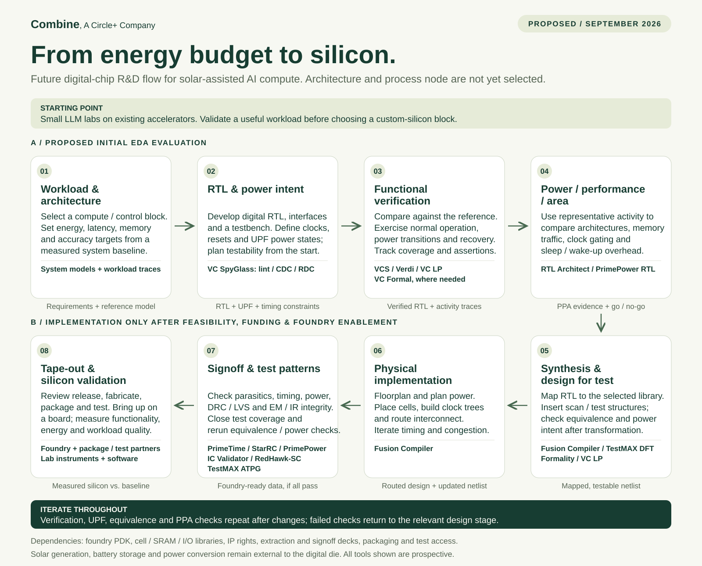

Technical roadmap / September 2026
From energy budget
to silicon.
A proposed EDA flow for exploring energy-efficient digital compute and control blocks within Combine's solar-assisted AI systems.
Status: proposed future flow. Research and prototyping are ongoing. The initial product uses existing accelerators for small LLM labs. Custom silicon would follow workload validation and a feasibility decision; no completed RTL, licensed EDA deployment or tape-out is asserted here.
{kind=link}

What the credits would test
Whether a narrowly scoped digital block can meet workload quality, latency and memory requirements within an achievable energy budget.
Initial evaluation would prioritize simulation, debug, RTL quality, power intent and activity-based power estimation. Implementation would follow only if the evidence supports a custom-silicon path.
System boundaries & prerequisites
Solar panels, storage and regulated power delivery sit outside the digital die. Chip-level power savings must also be measured in the complete system.
Process node, foundry, architecture and schedule remain open. Physical design requires a compatible PDK, libraries, IP rights and signoff decks; fabrication, packaging and test need separate arrangements.
Read the flow as text
- Workload & architecture. Select a compute / control block. Set energy, latency, memory and accuracy targets from a measured system baseline. System models + workload traces.
- RTL & power intent. Develop digital RTL, interfaces and a testbench. Define clocks, resets and UPF power states; plan testability from the start. VC SpyGlass: lint / CDC / RDC.
- Functional verification. Compare against the reference. Exercise normal operation, power transitions and recovery. Track coverage and assertions. VCS / Verdi / VC LP; VC Formal, where needed.
- Power / performance / area. Use representative activity to compare architectures, memory traffic, clock gating and sleep / wake-up overhead. RTL Architect / PrimePower RTL.
- Synthesis & design for test. Map RTL to the selected library. Insert scan / test structures; check equivalence and power intent after transformation. Fusion Compiler / TestMAX DFT; Formality / VC LP.
- Physical implementation. Floorplan and plan power. Place cells, build clock trees and route interconnect. Iterate timing and congestion. Fusion Compiler.
- Signoff & test patterns. Check parasitics, timing, power, DRC / LVS and EM / IR integrity. Close test coverage and rerun equivalence / power checks. PrimeTime / StarRC / PrimePower; IC Validator / RedHawk-SC; TestMAX ATPG.
- Tape-out & silicon validation. Review release, fabricate, package and test. Bring up on a board; measure functionality, energy and workload quality. Foundry + package / test partners; Lab instruments + software.
Prospective tools / Not a current inventory
A staged tool plan
No EDA products have been confirmed as currently in use in the project information available for this plan. Product links below point to Synopsys documentation.
| Stage | Product | Intended role |
|---|---|---|
| Initial evaluation | VCS + Verdi | RTL simulation, coverage and debug, including power-aware simulation. |
| Initial evaluation | VC SpyGlass | RTL lint, clock-domain crossing (CDC) and reset-domain crossing (RDC) analysis. |
| Initial evaluation | VC LP | Static checks of Unified Power Format (UPF) power intent and its implementation. |
| Initial evaluation | RTL Architect + PrimePower RTL | Early power, performance and area exploration using representative workloads. |
| As needed in verification | VC Formal | Property-based verification of selected control, interface and power-management logic. |
| Later implementation | Fusion Compiler | An integrated digital synthesis, placement, clock-tree and routing flow. |
| Later implementation | Formality | Equivalence checking across synthesis and implementation changes. |
| Later implementation | TestMAX DFT + TestMAX ATPG | Design-for-test structures and manufacturing test-pattern generation. |
| Later signoff | PrimeTime + StarRC + PrimePower | Static timing, parasitic extraction and power signoff. |
| Later signoff | IC Validator | Physical verification: design-rule checks and layout-versus-schematic checks. |
| Later signoff | RedHawk-SC | Power-integrity and reliability analysis, including voltage drop and electromigration. |
| Conditional analog scope | Custom Compiler + PrimeSim HSPICE | Only if custom analog or mixed-signal blocks are added; external power components are the initial assumption. |
Final tool selection depends on architecture, foundry compatibility and the program's license entitlements. Fusion Compiler is the proposed integrated implementation path; a separate Design Compiler / IC Compiler II path would be an alternative, not an additional default requirement. Memory BIST / repair and FPGA prototyping tooling would be scoped after memory and prototype choices.